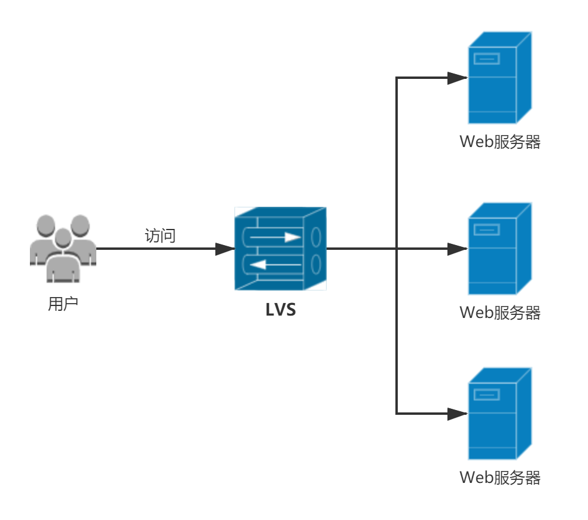
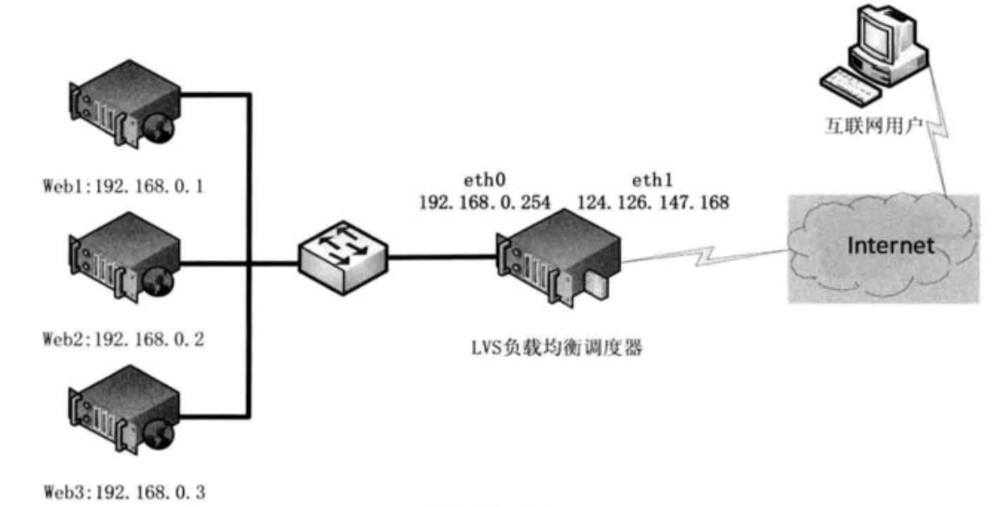
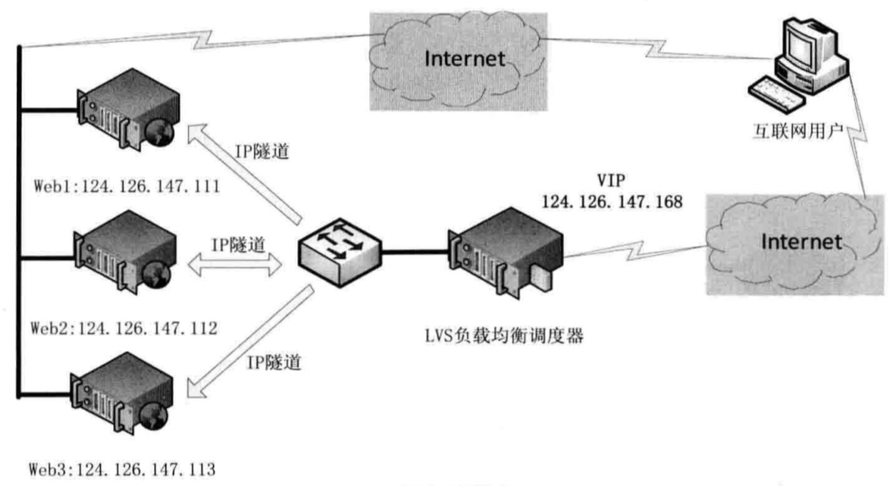
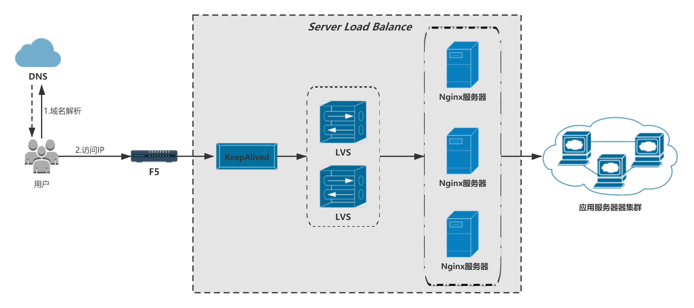

了解了分布式秒杀系统的整体架构以后，我再来讲解下常见的负载均衡架构。我曾在《分布式系统从理论到实战》系列的文章中介绍过负载均衡，当时主要是从DNS、硬件、软件三个维度对负载均衡进行简单介绍。
事实上，很多大公司都会基于硬件+软件实现一套自己的负载均衡（SLB）架构，这套架构一般都是由运维或底层网络团队负责落地。对于那些需要抗住数万乃至几十万QPS的应用来说，负载均衡是必须整合到应用的架构中去的。分布式秒杀系统也属于这类高并发应用，所以本章我就先来讲解下负载均衡架构，为后续章节的内容作铺垫。
所谓SLB，就是指 Server Load Balancer ——负载均衡，底层一般是基于 LVS+KeepAlived+Nginx 这样的一套架构来实现的。
一、LVS
LVS，即Linux Virtual Server，就是Linux虚拟服务器，它会把上游的一组Web服务器统一成一台虚机对外提供服务，对访问者来说，都是访问你的LVS，看起来就跟只有一台服务器一样：

LVS基于操作系统内核工作，有超强的并发处理能力。单台LVS，可支持上万并发连接，稳定性强。同时，LVS工作在OSI网络模型第4层（即传输层），这个特点也决定了它在负载均衡软件里的性能最强，稳定性最好，对内存和CPU资源消耗极低。
LVS有多种模式（或者称为模型），在不同的模式下，LVS实现负载均衡的方式也不同：
- NAT模式：通过网络地址转换的方式来实现调度；
- TUN模式：即IP隧道模式；
- DR模式：即直接路由模式；
- FULLNAT模式：一种对NAT改进的模式。
我这里主要介绍了NAT模式和TUN模式。
1.1 NAT模式
LVS服务器对外提供的是一个Virtual IP Address，即一个虚拟服务器IP地址。LVS服务器收到请求之后，会基于NAT技术进行地址改写。我来讲解下基于NAT模式的整个工作流程：
- 首先，客户端发送请求给我们的Web服务器，实际把请求发送给了LVS服务器，尝试跟LVS服务器基于TCP/IP协议建立TCP连接；
- LVS服务器拿到一个TCP连接的初始SYN报文之后，会根据负载均衡算法从后端的Web服务器中挑选出一台机器，然后就会用NAT技术改写请求里面的目标地址和端口为Web服务器的地址和端口，把报文转发过去；
- 建立完成Socket连接后，LVS会把这个Socket连接和目标Web服务器信息记录到一个Hash表中，这样下次同一个Socket连接后续发送报文来的时候，LVS就可以根据Hash表的映射关系，把这个连接的报文转发给指定的Web服务器；
- 最后，LVS会通过时间轮机制对每个连接进行监听，如果某个连接超过一定时间都没有请求，LVS就会把这个连接从Hash表删除。

> Hash表里的一个连接数据只要128字节，所以一般LVS服务器可以调度几百万个连接都没问题。
从上面的整个流程也可以看出，LVS处理的是TCP报文，它是运行在四层网络协议上的负载均衡技术框架，根本就不会去关心HTTP协议。同时，在NAT 模式下，TCP报文的进出都要经过 LVS 处理：
- 当报文到达 LVS 时，LVS做
目标地址转换（DNAT），将目标IP改为Web服务器的IP，对于Web服务器来说，它接收到报文后，仿佛是客户端直接发给它的一样；
- Web服务器处理完返回响应时，源IP是自身IP，目标IP是客户端的IP，报文通过通过LVS中转，LVS会做
源地址转换（SNAT），将TCP包中的源地址改为VIP，这样对客户端来说，看起来就仿佛是 LVS 直接返回给它的，客户端无法感知到后端的Web服务器的存在。
### 1.2 TUN模式
TUN模式，有时也叫
IP隧道技术。在NAT模式下，所有数据包的请求/响应都需要经过LVS调度器转发，如果后端服务器的数量过多（超过20台），则LVS本身就会成为集群的瓶颈。事实上，大部分请求的请求数据包往往远小于响应数据包的大小，因为响应数据包中还包含有客户需要的具体数据。
TUN模式的解决思路就是：
将请求与响应数据分离，让调度器仅处理数据请求，而让Web服务器将响应数据包直接返回给客户端。TUN模式的拓扑结构图如下：

IP隧道（IP Tunning）是一种数据包封装技术。我这里简单讲解下，大致来说就是：
- 每一台Web服务器都把自己的真实地址配置在IP隧道设备上；
- LVS接受到请求之后，把请求报文封装到一个IP报文里，并把该IP报文转发给一台Web服务器；
- Web服务器拿到IP报文后进行解析，拿到里面的请求报文，如果发现报文的目标地址是VIP，且这个VIP已经配置在自己的IP隧道设备上，那就是它就知道需要通过IP隧道来响应这个请求了；
- Web服务器发送响应时，根据报文里的信息，确认需要返回响应的客户端地址，把响应报文直接返回给指定的客户端。
所以，TUN模式要求Web服务器可以直接与外部网络连接，Web服务器在收到请求数据包后直接给客户端响应数据。
二、SLB
文章开头说了，大公司基本上会整合 LVS+KeepAlived+Nginx ，实现自己的一套SLB架构。以笔者所在的公司来说，一般是下面这样的架构：

上述架构中，四层协议的LVS和七层协议的Nginx结合起来，同时依靠KeepAlived对LVS做高可用。
在最外侧，通常都是部署LVS作为核心的负载均衡设备，通过优化可以很轻松的做到单机百万级的并发量，但是LVS本身的功能没有Nginx丰富，所以后面再加一层Nginx，Nginx可以做很多高阶的负载均衡功能，比如在Nginx里嵌入Lua脚本，静态资源代理等等。
三、总结
本章，我对负载均衡架构进行了讲解，主要讲解了LVS的基本原理以及如何组合使用LVS、KeepAlived、Nginx实现一套通用的负载均衡架构。